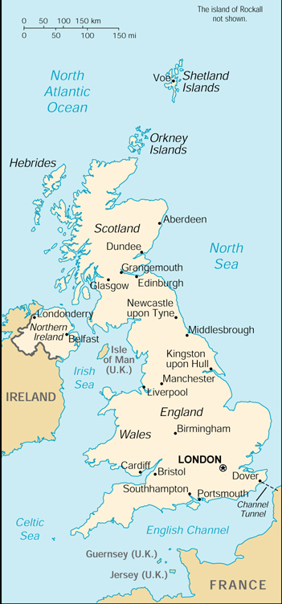

|
United Kingdom | |
| Introduction Geography People Government Economy Communications Transportation Military Transnational Issues | ||
|  | ||
| United Kingdom | Introduction | Top of Page |
| Background: | Great Britain, the dominant industrial and maritime power of the 19th century, played a leading role in developing parliamentary democracy and in advancing literature and science. At its zenith, the British Empire stretched over one-fourth of the earth's surface. The first half of the 20th century saw the UK's strength seriously depleted in two World Wars. The second half witnessed the dismantling of the Empire and the UK rebuilding itself into a modern and prosperous European nation. As one of five permanent members of the UN Security Council, a founding member of NATO, and of the Commonwealth, the UK pursues a global approach to foreign policy; it currently is weighing the degree of its integration with continental Europe. A member of the EU, it chose to remain outside of the European Monetary Union for the time being. Constitutional reform is also a significant issue in the UK. Regional assemblies with varying degrees of power opened in Scotland, Wales, and Northern Ireland in 1999. |
| United Kingdom | Geography | Top of Page |
| Location: | Western Europe, islands including the northern one-sixth of the island of Ireland between the North Atlantic Ocean and the North Sea, northwest of France |
| Geographic coordinates: | 54 00 N, 2 00 W |
| Map references: | Europe |
| Area: |
total:
244,820 sq km
land: 241,590 sq km water: 3,230 sq km note: includes Rockall and Shetland Islands |
| Area - comparative: | slightly smaller than Oregon |
| Land boundaries: |
total:
360 km
border countries: Ireland 360 km |
| Coastline: | 12,429 km |
| Maritime claims: |
continental shelf:
as defined in continental shelf orders or in accordance with agreed upon boundaries
exclusive fishing zone: 200 NM territorial sea: 12 NM |
| Climate: | temperate; moderated by prevailing southwest winds over the North Atlantic Current; more than one-half of the days are overcast |
| Terrain: | mostly rugged hills and low mountains; level to rolling plains in east and southeast |
| Elevation extremes: |
lowest point:
Fenland -4 m
highest point: Ben Nevis 1,343 m |
| Natural resources: | coal, petroleum, natural gas, tin, limestone, iron ore, salt, clay, chalk, gypsum, lead, silica, arable land |
| Land use: |
arable land:
25%
permanent crops: 0% permanent pastures: 46% forests and woodland: 10% other: 19% (1993 est.) |
| Irrigated land: | 1,080 sq km (1993 est.) |
| Natural hazards: | NA |
| Environment - current issues: | continues to reduce greenhouse gas emissions (has meet Kyoto Protocol target of a 12.5% reduction from 1990 levels and hopes to reduce even more); small particulate emissions, largely from vehicular traffic, remain a problem; solid waste continues to rise and recycling is very limited |
| Environment - international agreements: |
party to:
Air Pollution, Air Pollution-Nitrogen Oxides, Air Pollution-Sulphur 94, Air Pollution-Volatile Organic Compounds, Antarctic-Environmental Protocol, Antarctic-Marine Living Resources, Antarctic Seals, Antarctic Treaty, Biodiversity, Climate Change, Desertification, Endangered Species, Environmental Modification, Hazardous Wastes, Law of the Sea, Marine Dumping, Marine Life Conservation, Nuclear Test Ban, Ozone Layer Protection, Ship Pollution, Tropical Timber 83, Tropical Timber 94, Wetlands, Whaling
signed, but not ratified: Air Pollution-Persistent Organic Pollutants, Climate Change-Kyoto Protocol |
| Geography - note: | lies near vital North Atlantic sea lanes; only 35 km from France and now linked by tunnel under the English Channel; because of heavily indented coastline, no location is more than 125 km from tidal waters |
| United Kingdom | People | Top of Page |
| Population: | 59,647,790 (July 2001 est.) |
| Age structure: |
0-14 years:
18.89% (male 5,778,415; female 5,486,114)
15-64 years: 65.41% (male 19,712,932; female 19,304,771) 65 years and over: 15.7% (male 3,895,921; female 5,469,637) (2001 est.) |
| Population growth rate: | 0.23% (2001 est.) |
| Birth rate: | 11.54 births/1,000 population (2001 est.) |
| Death rate: | 10.35 deaths/1,000 population (2001 est.) |
| Net migration rate: | 1.07 migrant(s)/1,000 population (2001 est.) |
| Sex ratio: |
at birth:
1.05 male(s)/female
under 15 years: 1.05 male(s)/female 15-64 years: 1.02 male(s)/female 65 years and over: 0.71 male(s)/female total population: 0.97 male(s)/female (2001 est.) |
| Infant mortality rate: | 5.54 deaths/1,000 live births (2001 est.) |
| Life expectancy at birth: |
total population:
77.82 years
male: 75.13 years female: 80.66 years (2001 est.) |
| Total fertility rate: | 1.73 children born/woman (2001 est.) |
| HIV/AIDS - adult prevalence rate: | 0.11% (1999 est.) |
| HIV/AIDS - people living with HIV/AIDS: | 31,000 (1999 est.) |
| HIV/AIDS - deaths: | 450 (1999 est.) |
| Nationality: |
noun:
Briton(s), British (collective plural)
adjective: British |
| Ethnic groups: | English 81.5%, Scottish 9.6%, Irish 2.4%, Welsh 1.9%, Ulster 1.8%, West Indian, Indian, Pakistani, and other 2.8% |
| Religions: | Anglican 27 million, Roman Catholic 9 million, Muslim 1 million, Presbyterian 800,000, Methodist 760,000, Sikh 400,000, Hindu 350,000, Jewish 300,000 (1991 est.) |
| Languages: | English, Welsh (about 26% of the population of Wales), Scottish form of Gaelic (about 60,000 in Scotland) |
| Literacy: |
definition:
age 15 and over has completed five or more years of schooling
total population: 99% (1978 est.) male: NA% female: NA% |
| United Kingdom | Government | Top of Page |
| Country name: |
conventional long form:
United Kingdom of Great Britain and Northern Ireland
conventional short form: United Kingdom abbreviation: UK |
| Government type: | constitutional monarchy |
| Capital: | London |
| Administrative divisions: | England - 47 boroughs, 36 counties*, 29 London boroughs**, 12 cities and boroughs***, 10 districts****, 12 cities*****, 3 royal boroughs******; Barking and Dagenham**, Barnet**, Barnsley, Bath and North East Somerset****, Bedfordshire*, Bexley**, Birmingham***, Blackburn with Darwen, Blackpool, Bolton, Bournemouth, Bracknell Forest, Bradford***, Brent**, Brighton and Hove, City of Bristol*****, Bromley**, Buckinghamshire*, Bury, Calderdale, Cambridgeshire*, Camden**, Cheshire*, Cornwall*, Coventry***, Croydon**, Cumbria*, Darlington, Derby*****, Derbyshire*, Devon*, Doncaster, Dorset*, Dudley, Durham*, Ealing**, East Riding of Yorkshire****, East Sussex*, Enfield**, Essex*, Gateshead, Gloucestershire*, Greenwich**, Hackney**, Halton, Hammersmith and Fulham**, Hampshire*, Haringey**, Harrow**, Hartlepool, Havering**, Herefordshire*, Hertfordshire*, Hillingdon**, Hounslow**, Isle of Wight*, Islington**, Kensington and Chelsea******, Kent*, City of Kingston upon Hull*****, Kingston upon Thames******, Kirklees, Knowsley, Lambeth**, Lancashire*, Leeds***, Leicester*****, Leicestershire*, Lewisham**, Lincolnshire*, Liverpool***, City of London*****, Luton, Manchester***, Medway, Merton**, Middlesbrough, Milton Keynes, Newcastle upon Tyne***, Newham**, Norfolk*, Northamptonshire*, North East Lincolnshire****, North Lincolnshire****, North Somerset****, North Tyneside, Northumberland*, North Yorkshire*, Nottingham*****, Nottinghamshire*, Oldham, Oxfordshire*, Peterborough*****, Plymouth*****, Poole, Portsmouth*****, Reading, Redbridge**, Redcar and Cleveland, Richmond upon Thames**, Rochdale, Rotherham, Rutland****, Salford***, Shropshire*, Sandwell, Sefton, Sheffield***, Slough, Solihull, Somerset*, Southampton*****, Southend-on-Sea, South Gloucestershire****, South Tyneside, Southwark**, Staffordshire*, St. Helens, Stockport, Stockton-on-Tees, Stoke-on-Trent*****, Suffolk*, Sunderland***, Surrey*, Sutton**, Swindon, Tameside, Telford and Wrekin****, Thurrock, Torbay, Tower Hamlets**, Trafford, Wakefield***, Walsall, Waltham Forest**, Wandsworth**, Warrington, Warwickshire*, West Berkshire****, Westminster***, West Sussex*, Wigan, Wiltshire*, Windsor and Maidenhead******, Wirral, Wokingham****, Wolverhampton, Worcestershire*, York*****; Northern Ireland - 24 districts, 2 cities*; Antrim, Ards, Armagh, Ballymena, Ballymoney, Banbridge, Belfast*, Carrickfergus, Castlereagh, Coleraine, Cookstown, Craigavon, Down, Dungannon, Fermanagh, Larne, Limavady, Lisburn, Derry*, Magherafelt, Moyle, Newry and Mourne, Newtownabbey, North Down, Omagh, Strabane; Scotland - 32 council areas; Aberdeen City, Aberdeenshire, Angus, Argyll and Bute, The Scottish Borders, Clackmannanshire, Dumfries and Galloway, Dundee City, East Ayrshire, East Dunbartonshire, East Lothian, East Renfrewshire, City of Edinburgh, Falkirk, Fife, Glasgow City, Highland, Inverclyde, Midlothian, Moray, North Ayrshire, North Lanarkshire, Orkney Islands, Perth and Kinross, Renfrewshire, Shetland Islands, South Ayrshire, South Lanarkshire, Stirling, West Dunbartonshire, Eilean Siar (Western Isles), West Lothian; Wales - 11 county boroughs, 9 counties*, 2 cities and counties**; Isle of Anglesey*, Blaenau Gwent, Bridgend, Caerphilly, Cardiff**, Ceredigion*, Carmarthenshire*, Conwy, Denbighshire*, Flintshire*, Gwynedd, Merthyr Tydfil, Monmouthshire*, Neath Port Talbot, Newport, Pembrokeshire*, Powys*, Rhondda Cynon Taff, Swansea**, Torfaen, The Vale of Glamorgan*, Wrexham |
| Dependent areas: | Anguilla, Bermuda, British Indian Ocean Territory, British Virgin Islands, Cayman Islands, Falkland Islands, Gibraltar, Guernsey, Jersey, Isle of Man, Montserrat, Pitcairn Islands, Saint Helena, South Georgia and the South Sandwich Islands, Turks and Caicos Islands |
| Independence: | England has existed as a unified entity since the 10th century; the union between England and Wales was enacted under the Statute of Rhuddlan in 1284; in the Act of Union of 1707, England and Scotland agreed to permanent union as Great Britain; the legislative union of Great Britain and Ireland was implemented in 1801, with the adoption of the name the United Kingdom of Great Britain and Ireland; the Anglo-Irish treaty of 1921 formalized a partition of Ireland; six northern Irish counties remained part of the United Kingdom as Northern Ireland and the current name of the country, the United Kingdom of Great Britain and Northern Ireland, was adopted in 1927 |
| National holiday: | Birthday of Queen ELIZABETH II, celebrated on the second Saturday in June (1926) |
| Constitution: | unwritten; partly statutes, partly common law and practice |
| Legal system: | common law tradition with early Roman and modern continental influences; no judicial review of Acts of Parliament; accepts compulsory ICJ jurisdiction, with reservations; British courts and legislation are increasingly subject to review by European Union courts |
| Suffrage: | 18 years of age; universal |
| Executive branch: |
chief of state:
Queen ELIZABETH II (since 6 February 1952); Heir Apparent Prince CHARLES (son of the queen, born 14 November 1948)
head of government: Prime Minister Anthony C. L. (Tony) BLAIR (since 2 May 1997) cabinet: Cabinet of Ministers appointed by the prime minister elections: none; the monarch is hereditary; the prime minister is the leader of the majority party in the House of Commons (assuming there is no majority party, a prime minister would have a majority coalition or at least a coalition that was not rejected by the majority) |
| Legislative branch: |
bicameral Parliament comprised of House of Lords (consists of approximately 500 life peers, 92 hereditary peers and 26 clergy) and House of Commons (659 seats; members are elected by popular vote to serve five-year terms unless the House is dissolved earlier)
elections: House of Lords - no elections (some proposals for further reform include elections); House of Commons - last held 7 June 2001 (next to be held by NA May 2006) election results: House of Commons - percent of vote by party - NA%; seats by party - Labor 412, Conservative and Unionist 166, Liberal Democrat 52, other 29 note: in 1998 elections were held for a Northern Ireland Parliament (because of unresolved disputes among existing parties, the transfer of power from London to Northern Ireland came only at the end of 1999 and was rescinded in February 2000); in 1999 there were elections for a new Scottish Parliament and a new Welsh Assembly |
| Judicial branch: | House of Lords (highest court of appeal; several Lords of Appeal in Ordinary are appointed by the monarch for life); Supreme Courts of England, Wales, and Northern Ireland (comprising the Courts of Appeal, the High Courts of Justice, and the Crown Courts); Scotland's Court of Session and Court of the Justiciary |
| Political parties and leaders: | Conservative and Unionist Party [William HAGUE]; Democratic Unionist Party (Northern Ireland) [Rev. Ian PAISLEY]; Labor Party [Anthony (Tony) Blair]; Liberal Democrats [Charles KENNEDY]; Party of Wales (Plaid Cymru) [Ieuan Wyn JONES]; Scottish National Party or SNP [John SWINNEY]; Sinn Fein (Northern Ireland) [Gerry ADAMS]; Social Democratic and Labor Party or SDLP (Northern Ireland) [John HUME]; Ulster Unionist Party (Northern Ireland) [David TRIMBLE] |
| Political pressure groups and leaders: | Campaign for Nuclear Disarmament; Confederation of British Industry; National Farmers' Union; Trades Union Congress |
| International organization participation: | AfDB, AsDB, Australia Group, BIS, C, CCC, CDB (non-regional), CE, CERN, EAPC, EBRD, ECA (associate), ECE, ECLAC, EIB, ESA, ESCAP, EU, FAO, G- 5, G- 7, G-10, IADB, IAEA, IBRD, ICAO, ICC, ICFTU, ICRM, IDA, IEA, IFAD, IFC, IFRCS, IHO, ILO, IMF, IMO, Inmarsat, Intelsat, Interpol, IOC, IOM (observer), ISO, ITU, MONUC, NAM (guest), NATO, NEA, NSG, OAS (observer), OECD, OPCW, OSCE, PCA, SPC, UN, UN Security Council, UNAMSIL, UNCTAD, UNESCO, UNFICYP, UNHCR, UNIDO, UNIKOM, UNMIBH, UNMIK, UNOMIG, UNRWA, UNTAET, UNU, UPU, WCL, WEU, WHO, WIPO, WMO, WTrO, ZC |
| Diplomatic representation in the US: |
chief of mission:
Ambassador Sir Christopher J. R. MEYER
chancery: 3100 Massachusetts Avenue NW, Washington, DC 20008 telephone: [1] (202) 588-6500 FAX: [1] (202) 588-7870 consulate(s) general: Atlanta, Boston, Chicago, Cleveland, Houston, Los Angeles, New York, and San Francisco consulate(s): Dallas, Denver, Miami, Orlando (reports to Atlanta), San Juan, and Seattle |
| Diplomatic representation from the US: |
chief of mission:
Ambassador Philip LADER
embassy: 24/31 Grosvenor Square, London, W1A1AE mailing address: PSC 801, Box 40, FPO AE 09498-4040 telephone: [44] (0) 207499-9000 (switchboard) FAX: [44] (171) 409-1637 consulate(s) general: Belfast, Edinburgh |
| Flag description: | blue with the red cross of Saint George (patron saint of England) edged in white superimposed on the diagonal red cross of Saint Patrick (patron saint of Ireland) and which is superimposed on the diagonal white cross of Saint Andrew (patron saint of Scotland); known as the Union Flag or Union Jack; the design and colors (especially the Blue Ensign) have been the basis for a number of other flags including other Commonwealth countries and their constituent states or provinces, as well as British overseas territories |
| United Kingdom | Economy | Top of Page |
| Economy - overview: | The UK, a leading trading power and financial center, deploys an essentially capitalistic economy, one of the quartet of trillion dollar economies of Western Europe. Over the past two decades the government has greatly reduced public ownership and contained the growth of social welfare programs. Agriculture is intensive, highly mechanized, and efficient by European standards, producing about 60% of food needs with only 1% of the labor force. The UK has large coal, natural gas, and oil reserves; primary energy production accounts for 10% of GDP, one of the highest shares of any industrial nation. Services, particularly banking, insurance, and business services, account by far for the largest proportion of GDP while industry continues to decline in importance. The economy has grown steadily, at just above or below 3%, for the last several years. The BLAIR government has put off the question of participation in the euro system until after the next election, in June of 2001; Chancellor of the Exchequer BROWN has identified some key economic tests to determine whether the UK should join the common currency system, but it will largely be a political decision. A serious short-term problem is foot-and-mouth disease, which by early 2001 had broken out in nearly 600 farms and slaughterhouses and had resulted in the killing of 400,000 animals. |
| GDP: | purchasing power parity - $1.36 trillion (2000 est.) |
| GDP - real growth rate: | 3% (2000 est.) |
| GDP - per capita: | purchasing power parity - $22,800 (2000 est.) |
| GDP - composition by sector: |
agriculture:
1.7%
industry: 24.9% services: 73.4% (1999) |
| Population below poverty line: | 17% |
| Household income or consumption by percentage share: |
lowest 10%:
2.6%
highest 10%: 27.3% (1991) |
| Inflation rate (consumer prices): | 2.4% (2000 est.) |
| Labor force: | 29.2 million (1999) |
| Labor force - by occupation: | agriculture 1%, industry 19%, services 80% (1996 est.) |
| Unemployment rate: | 5.5% (2000 est.) |
| Budget: |
revenues:
$555.2 billion
expenditures: $510.8 billion, including capital expenditures of $37.7 billion (FY00) |
| Industries: | machine tools, electric power equipment, automation equipment, railroad equipment, shipbuilding, aircraft, motor vehicles and parts, electronics and communications equipment, metals, chemicals, coal, petroleum, paper and paper products, food processing, textiles, clothing, and other consumer goods |
| Industrial production growth rate: | 2% (2000) |
| Electricity - production: | 342.771 billion kWh (1999) |
| Electricity - production by source: |
fossil fuel:
69.38%
hydro: 1.55% nuclear: 26.68% other: 2.39% (1999) |
| Electricity - consumption: | 333.012 billion kWh (1999) |
| Electricity - exports: | 265 million kWh (1999) |
| Electricity - imports: | 14.5 billion kWh (1999) |
| Agriculture - products: | cereals, oilseed, potatoes, vegetables; cattle, sheep, poultry; fish |
| Exports: | $282 billion (f.o.b., 2000) |
| Exports - commodities: | manufactured goods, fuels, chemicals; food, beverages, tobacco |
| Exports - partners: | EU 58% (Germany 12%, France 10%, Netherlands 8%), US 15% (1999) |
| Imports: | $324 billion (f.o.b., 2000) |
| Imports - commodities: | manufactured goods, machinery, fuels; foodstuffs |
| Imports - partners: | EU 53% (Germany 14%, France 9%, Netherlands 7%), US 13%, Japan 5% (1999) |
| Debt - external: | $NA |
| Economic aid - donor: | ODA, $3.4 billion (1997) |
| Currency: | British pound (GBP) |
| Currency code: | GBP |
| Exchange rates: | British pounds per US dollar - 0.6764 (January 2001), 0.6596 (2000), 0.6180 (1999), 0.6037 (1998), 0.6106 (1997), 0.6403 (1996) |
| Fiscal year: | 1 April - 31 March |
| United Kingdom | Communications | Top of Page |
| Telephones - main lines in use: | 34.878 million (1997) |
| Telephones - mobile cellular: | 13 million (yearend 1998) |
| Telephone system: |
general assessment:
technologically advanced domestic and international system
domestic: equal mix of buried cables, microwave radio relay, and fiber-optic systems international: 40 coaxial submarine cables; satellite earth stations - 10 Intelsat (7 Atlantic Ocean and 3 Indian Ocean), 1 Inmarsat (Atlantic Ocean region), and 1 Eutelsat; at least 8 large international switching centers |
| Radio broadcast stations: | AM 219, FM 431, shortwave 3 (1998) |
| Radios: | 84.5 million (1997) |
| Television broadcast stations: | 228 (plus 3,523 repeaters) (1995) |
| Televisions: | 30.5 million (1997) |
| Internet country code: | .uk |
| Internet Service Providers (ISPs): | 245 (2000) |
| Internet users: | 19.47 million (2000) |
| United Kingdom | Transportation | Top of Page |
| Railways: |
total:
16,878 km
broad gauge: 342 km 1.600-m gauge (190 km double track); note - all 1.600-m gauge track, of which 342 km is in common carrier use, and is in Northern Ireland standard gauge: 16,536 km 1.435-m gauge (4,928 km electrified; 12,591 km double or multiple track) (1996) |
| Highways: |
total:
371,603 km
paved: 371,603 km (including 3,303 km of expressways) unpaved: 0 km (1998 est.) |
| Waterways: | 3,200 km |
| Pipelines: | crude oil (almost all insignificant) 933 km; petroleum products 2,993 km; natural gas 12,800 km |
| Ports and harbors: | Aberdeen, Belfast, Bristol, Cardiff, Dover, Falmouth, Felixstowe, Glasgow, Grangemouth, Hull, Leith, Liverpool, London, Manchester, Peterhead, Plymouth, Portsmouth, Scapa Flow, Southampton, Sullom Voe, Tees, Tyne |
| Merchant marine: |
total:
200 ships (1,000 GRT or over) totaling 3,934,776 GRT/3,760,240 DWT
ships by type: bulk 4, cargo 31, chemical tanker 11, combination ore/oil 1, container 47, liquefied gas 3, passenger 14, passenger/cargo 1, petroleum tanker 52, refrigerated cargo 4, roll on/roll off 19, short-sea passenger 10, specialized tanker 1, vehicle carrier 2 note: includes some foreign-owned ships registered here as a flag of convenience: Denmark 1 (2000 est.) |
| Airports: | 489 (2000 est.) |
| Airports - with paved runways: |
total:
349
over 3,047 m: 10 2,438 to 3,047 m: 33 1,524 to 2,437 m: 162 914 to 1,523 m: 89 under 914 m: 55 (2000 est.) |
| Airports - with unpaved runways: |
total:
140
1,524 to 2,437 m: 1 914 to 1,523 m: 23 under 914 m: 116 (2000 est.) |
| Heliports: | 11 (2000 est.) |
| United Kingdom | Military | Top of Page |
| Military branches: | Army, Royal Navy (includes Royal Marines), Royal Air Force |
| Military manpower - availability: | males age 15-49: 14,599,199 (2001 est.) |
| Military manpower - fit for military service: | males age 15-49: 12,139,930 (2001 est.) |
| Military expenditures - dollar figure: | $36.884 billion (FY97) |
| Military expenditures - percent of GDP: | 2.7% (FY97) |
| United Kingdom | Transnational Issues | Top of Page |
| Disputes - international: | Northern Ireland issue with Ireland (historic peace agreement signed 10 April 1998); Gibraltar issue with Spain; Argentina claims Falkland Islands (Islas Malvinas); Argentina claims South Georgia and the South Sandwich Islands; Mauritius and the Seychelles claim Chagos Archipelago (UK-administered British Indian Ocean Territory); Rockall continental shelf dispute involving Denmark and Iceland; territorial claim in Antarctica (British Antarctic Territory) overlaps Argentine claim and partially overlaps Chilean claim; disputes with Iceland, Denmark, and Ireland over the Faroe Islands continental shelf boundary outside 200 NM |
| Illicit drugs: | gateway country for Latin American cocaine entering the European market; major consumer of synthetic drugs, producer of limited amounts of synthetic drugs and synthetic precursor chemicals; major consumer of Southwest Asian heroin; money-laundering center |
{kind=link}